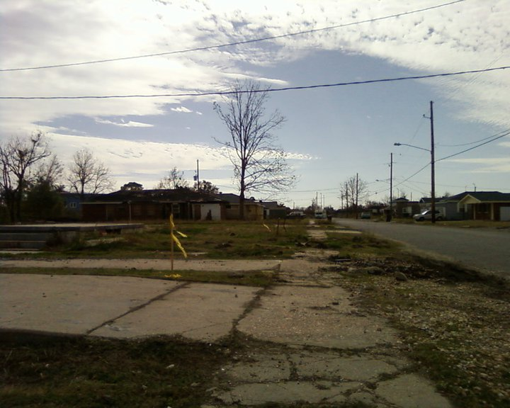
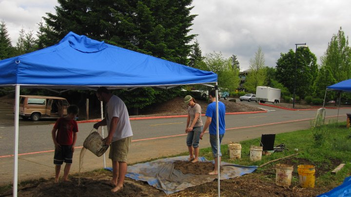
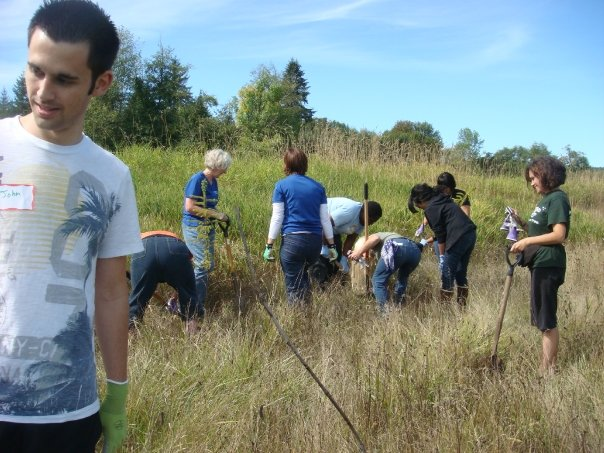
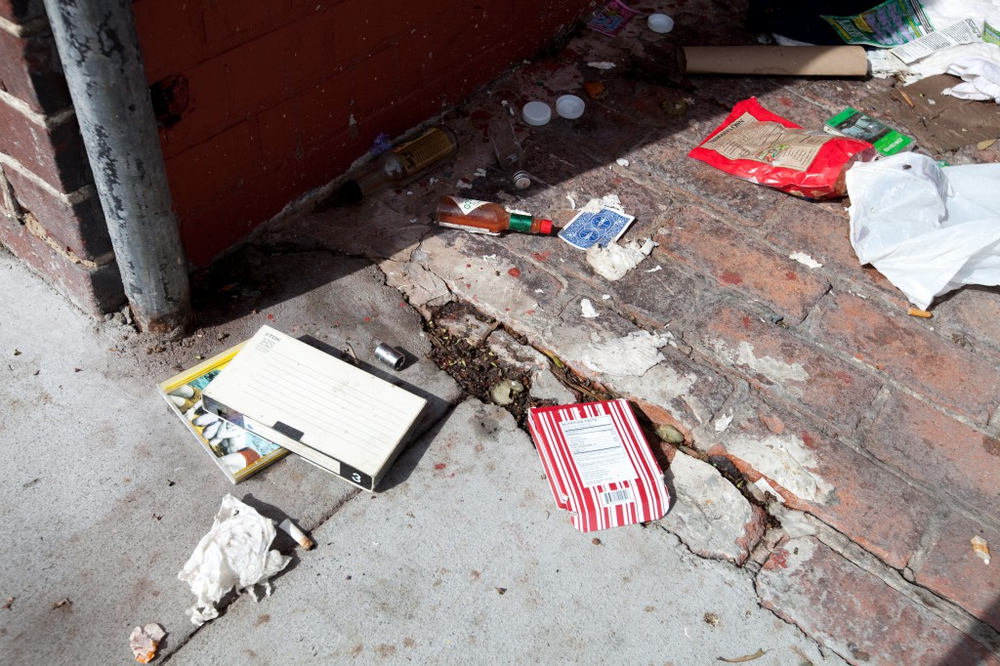

Conferences Attended
- International Symposium for Personal and Commercial Spaceflight (ISPCS) – October 2011
- Poverty Institute: Communication Across Barriers – August 2011
- United States Student Association Legislative Conference 2010 – June 2010
- Northwest Student Leadership Conference (NWSLC) – January 2010
Volunteering
English Conversation Tutor
Conversed

Post-Katrina Cleanup in New Orleans, LA
Cleaned

Village Building Convergence 2010
Converged

Flood Cleanup in Vernonia, OR
Cleaned

Martin Luther King Jr. Day Volunteering
Volunteered